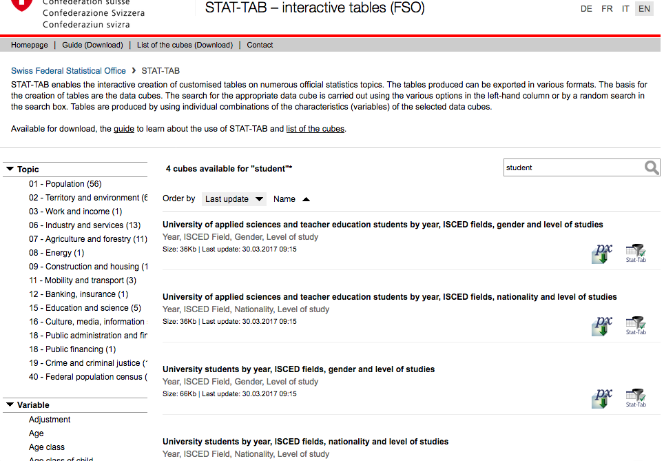
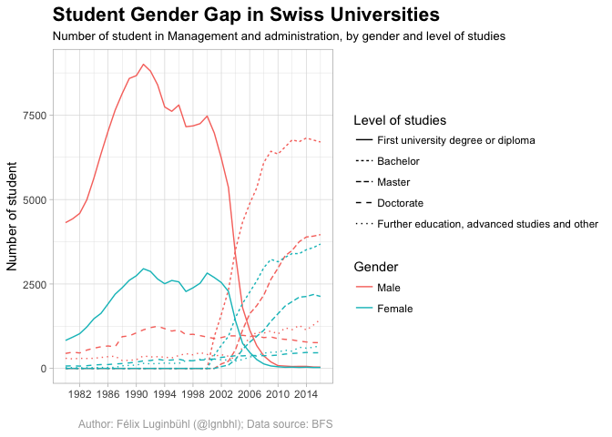
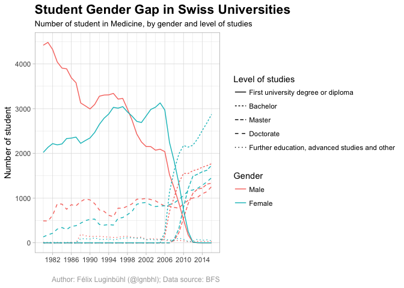
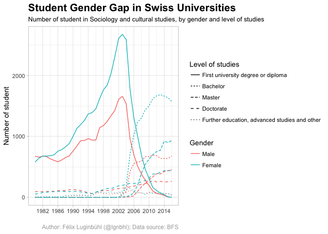
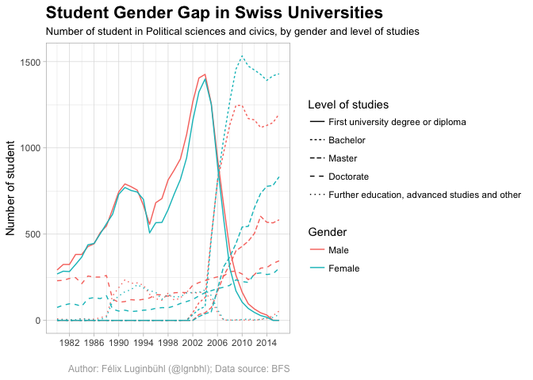

The {bfsdata} package makes the data from the Swiss Federal Statistical Office (or BFS for “Bundesamt für Statistik”) easily accessible to R users. It lets you search, download and read BFS datasets directly from the R console.
The {bfsdata} package consists of three functions:
bfs_search(word, word2, langage)bfs_download(row, name)bfs_dir()Imagine you want to make an exploratory analysis about students in Swiss universities. You could search if a dataset title of the BFS database contains the word “student” by using the bfs_search function.
devtools::install_github("lgnbhl/bfsdata")
library(bfsdata)
bfs_search("student", langage = "en")
# or alternatively: bfs_search("student", "", "en") ## [1] University students by year, ISCED fields, gender and level of studies
## [2] University students by year, ISCED fields, nationality and level of studies
## [3] University of applied sciences and teacher education students by year, ISCED fields, gender and level of studies
## [4] University of applied sciences and teacher education students by year, ISCED fields, nationality and level of studiesYou found that four English dataset titles contain the word “student”.
Note that it could also have been done on the BFS online database with the same result, as shown in this screenshot:

When using bfs_search, you will have in your Global Environment a CSV file called bfsMetadata. It is the Excel file from the BFS website, accessible through the “list of the cubes” link, read with the {readxl} package. You will also get a CSV dataset which contains the result of your search, named bfsMetadataSubset.
Let’s have a look at it.
## Classes 'tbl_df', 'tbl' and 'data.frame': 4 obs. of 5 variables:
## $ Title : chr "University students by year, ISCED fields, gender and level of studies" "University students by year, ISCED fields, nationality and level of studies" "University of applied sciences and teacher education students by year, ISCED fields, gender and level of studies" "University of applied sciences and teacher education students by year, ISCED fields, nationality and level of studies"
## $ Timespan : chr "1980-2016" "1990-2016" "1997-2016" "1997-2016"
## $ Last Update : chr "30.03.2017" "30.03.2017" "30.03.2017" "30.03.2017"
## $ Link : chr "px-x-1502040100_131" "px-x-1502040100_132" "px-x-1502040400_161" "px-x-1502040400_162"
## $ Languages available: chr "de, fr, it, en" "de, fr, it, en" "de, fr, it, en" "de, fr, it, en"The first dataset of our search seems interesting. We can download it (by typing row = 1, for the first result of the bfs_search function) and give it an optional name (the dataset is named “bfsData” by default) with the bfs_download function:
The bfs_download function downloads the BFS dataset, stored online in a PX format, and reads it in your R session with the {pxR} package. It also saves the dataset in both CSV and PX formats in the inst/extdata directory of the package.
Okay, let’s have a glimpse of it.
## Observations: 15,540
## Variables: 5
## $ Studienstufe <fctr> First university degree or diploma, Bachelor, Ma...
## $ Geschlecht <fctr> Male, Male, Male, Male, Male, Female, Female, Fe...
## $ ISCED.Field <fctr> Education science, Education science, Education ...
## $ Jahr <fctr> 1980, 1980, 1980, 1980, 1980, 1980, 1980, 1980, ...
## $ value <dbl> 545, 0, 0, 93, 13, 946, 0, 0, 70, 52, 1380, 0, 0,...Looks promising! We could use it to explore the relations between gender and academic fields, i.e. the ISCED.Field variable.
## [1] "Education science"
## [2] "Teacher training without subject specialisation"
## [3] "Teacher training with subject specialisation"
## [4] "Fine arts"
## [5] "Music and performing arts"
## [6] "Religion and theology"Note that you can have access to the metadata of your BFS dataset by reading directly the PX file in R, also saved in your Global Environnement while using the bfs_download function. Here are three examples of metadata taken from the bfsData_student_px object.
## $value
## [1] "University students by Year, ISCED Field, Gender and Level of study"## $value
## [1] "Section Educational Processes, e-mail <a href=mailto:sius@bfs.admin.ch>sius@bfs.admin.ch</a>"## $value
## [1] "FSO - STAT-TAB / Federal Statistical Office, 2010 Neuchâtel / Switzerland / © Federal Statistical Office"We can now make a function that plots the number of students each year since 1980, by gender and by ISCED field.
bfs_plot <- function(academicField) {
library(tidyverse)
library(lubridate)
library(scales)
# Make Jahr (year in German) a Date object
bfsData_student$Jahr <- as.Date(paste0(bfsData_student$Jahr, "-01-01"))
df <- bfsData_student %>%
filter(ISCED.Field == academicField) %>%
mutate(year = lubridate::ymd(Jahr))
ggplot(data = df, aes(x = year, y = value, colour = Geschlecht, linetype = Studienstufe)) +
geom_line() +
scale_x_date(breaks = date_breaks("4 years"),
labels = date_format("%Y"),
# Hadley: https://github.com/tidyverse/ggplot2/issues/1090
limits = c(df$year[[2]], NA)) +
scale_color_discrete(name = "Gender") +
scale_linetype_discrete(name = "Level of studies") +
labs(x = "", y = "Number of student",
title = "Student Gender Gap in Swiss Universities",
subtitle = paste0("Number of student in ", academicField, ", by gender and level of studies"),
caption = "Author: Félix Luginbühl (@lgnbhl); Data source: BFS") +
theme_light() +
theme(plot.title = element_text(size = 16, face = "bold"),
plot.caption = element_text(size = 9, color = "darkgrey"))
}Okay, let’s try this bfs_plot function with some academic fields.




In 1999, Switzerland adhered to the “Bologna Process”, which harmonized European academic qualifications in three levels: Bachelor, Master and Doctorate. In the graphics, we can see its progressive implementation by Swiss universities.
The graphics show that student gender gaps in Switzerland seem to be holding in some academic fields, while changing in others. I was surprised to discover a certain “equality” in the distribution of the number of male and female students in the field of Political sciences and civics since 1980, although female students became a majority in the new system of Bologna. Well, we will not dig further into this analysis. The objective of this article is simply to introduce the {bfsdata} package.
We got only four datasets related to the occurrence “student” in the English BFS metadata file. Obviously, the Swiss Federal Statistical Office has much more data in German and French. As explained before, the package creates a dataset in the Global Environment called bfsMetadataSubset for each search. Be warned that bfsMetadataSubset is rewritten every time bfs_search is called.
Let’s have a look at dataset titles related to students in German and French.
## [1] 33 5## [1] 29 5In German, we have 33 dataset titles related to the word “studierende”. We found 29 datasets in the French metadata.
If you want to open the inst/extdata directory of the package, where all downloaded datasets are stored (including the original PC-Axis file), simply type the following:
In a next article, I will show how the {bfsdata} package can be used to map BFS data with {rgdal} and {ggplot2}.
Thanks for reading. For updates of recent blog posts, follow me on Twitter.
The {bfsdata} package lets you scrap the BFS website in order to get Swiss datasets. But first, let’s check if we are allowed to do so with the {robotstxt} package.
## [1] TRUE## [1] TRUEYes, we are allowed to.
No data is stored into the package (as obviously I am not the owner of BFS datasets), but downloaded into the inst/extdata directory. Note that the datasets, downloads through bfs_download, are downloaded only one time. This makes {bfsdata} more effective as well as more respectful of the official BFS website, by decreasing the number of download requests.
The {bfsdata} package has two major limitations. Firstly, the BFS metadata Excel file, accessible through the “list of cubes” link, doesn’t give the variables names of each dataset, contrary to the BFS website search. So the bfs_search function shows only the datasets title names, while the BFS online search takes topics and variables into account while giving results. Secondly, the bfs_search function doesn’t have the autocompletion of the BFS website search, which can be quite useful. But despite theses limitations, I hope this package can be seen as a modeste contribution to the BFS objective of making Swiss data more accessible to searchers.
Below are the three functions of the {bfsdata} package.
bfs_search <- function(word = NULL, word2 = NULL, langage = "de") {
bfsDataPath <- system.file("extdata", package = "bfsdata")
assign("bfsDataPath", bfsDataPath, envir = .GlobalEnv)
if(langage == "de") {
if(!file.exists(system.file("extdata/bfsMetadata_de.xls", package = "bfsdata"))) {
download.file(url = "https://www.pxweb.bfs.admin.ch/ShowCubeList.aspx?px_language=de",
destfile = paste0("", bfsDataPath, "/bfsMetadata_de.xls"))
}
bfsMetadata <- readxl::read_excel(paste0("", bfsDataPath, "/bfsMetadata_de.xls"))
assign("bfsMetadata", bfsMetadata, envir = .GlobalEnv)
} else if(langage == "fr") {
if(!file.exists(system.file("extdata/bfsMetadata_fr.xls", package = "bfsdata"))) {
download.file(url = "https://www.pxweb.bfs.admin.ch/ShowCubeList.aspx?px_language=fr",
destfile = paste0("", bfsDataPath, "/bfsMetadata_fr.xls"))
}
bfsMetadata <- readxl::read_excel(paste0("", bfsDataPath, "/bfsMetadata_fr.xls"))
assign("bfsMetadata", bfsMetadata, envir = .GlobalEnv)
} else if (langage == "en") {
if(!file.exists(system.file("extdata/bfsMetadata_en.xls", package = "bfsdata"))) {
download.file(url = "https://www.pxweb.bfs.admin.ch/ShowCubeList.aspx?px_language=en",
destfile = paste0("", bfsDataPath, "/bfsMetadata_en.xls"))
}
bfsMetadata <- readxl::read_excel(paste0("", bfsDataPath, "/bfsMetadata_en.xls"))
assign("bfsMetadata", bfsMetadata, envir = .GlobalEnv)
} else if (langage == "it") {
if(!file.exists(system.file("extdata/bfsMetadata_it.xls", package = "bfsdata"))) {
download.file(url = "https://www.pxweb.bfs.admin.ch/ShowCubeList.aspx?px_language=it",
destfile = paste0("", bfsDataPath, "/bfsMetadata_it.xls"))
}
bfsMetadata <- readxl::read_excel(paste0("", bfsDataPath, "/bfsMetadata_it.xls"))
assign("bfsMetadata", bfsMetadata, envir = .GlobalEnv)
} else {
message("WARNING: choose between German, French, English or Italien (langage = “de“, “fr“, “en“, “it“)")
}
if(exists("bfsMetadata")) {
bfsMetadata <- na.omit(bfsMetadata)
colnames(bfsMetadata)[1] <- "Title"
colnames(bfsMetadata)[2] <- "Timespan"
colnames(bfsMetadata)[3] <- "Last Update"
colnames(bfsMetadata)[4] <- "Link"
colnames(bfsMetadata)[5] <- "Languages available"
# bfsMetadata$ID <- seq.int(nrow(bfsMetadata)) # add an ID variable
assign("bfsMetadata", bfsMetadata, envir = .GlobalEnv)
# URL: https://stackoverflow.com/questions/13187414/r-grep-is-there-an-and-operator
if(missing(word2)) {
bfsMetadataSubset <- bfsMetadata[grep(paste0("", word, ""), bfsMetadata$Title, ignore.case = TRUE), ]
assign("bfsMetadataSubset", bfsMetadataSubset, envir = .GlobalEnv)
print.table(bfsMetadataSubset$Title)
} else {
bfsMetadataSubset <- bfsMetadata[grep(paste0("(?=.*", word,")(?=.*", word2, ")"), bfsMetadata$Title, perl = TRUE, ignore.case = TRUE), ]
assign("bfsMetadataSubset", bfsMetadataSubset, envir = .GlobalEnv)
print.table(bfsMetadataSubset$Title)
}
}
}bfs_download <- function(row, name = "bfsData") {
bfsDataPath <- system.file("extdata/", package = "bfsdata")
assign("bfsDataPath", bfsDataPath, envir = .GlobalEnv)
if(!file.exists(system.file(paste0("extdata/", bfsMetadataSubset[row, 4], ".px"), package = "bfsdata"))) {
download.file(url = paste0("https://www.pxweb.bfs.admin.ch/DownloadFile.aspx?file=", bfsMetadataSubset[row,4], ""),
destfile = paste0("", bfsDataPath, "/", bfsMetadataSubset[row, 4],".px"))
} else {
message("WARNING: Dataset already downloaded")
}
bfsData <- pxR::read.px(paste0("", bfsDataPath, "/",bfsMetadataSubset[row, 4],".px"))
assign(paste0("", name,"_px"), bfsData, envir = .GlobalEnv)
bfsData <- as.data.frame(bfsData)
write.csv(bfsData, file = paste0("", bfsDataPath, "/", name,".csv"), row.names = FALSE)
assign(paste0("", name,""), bfsData, envir = .GlobalEnv)
detach("package:pxR", unload = TRUE) # pxR::as.data.frame in conflict with raster::as.data.frame
}# Reference: https://stackoverflow.com/questions/12135732/
bfs_dir <- function(dir = paste0("", system.file("extdata/", package = "bfsdata"), "")){
if (.Platform['OS.type'] == "windows"){
shell.exec(dir)
} else {
system(paste(Sys.getenv("R_BROWSER"), dir))
}
}